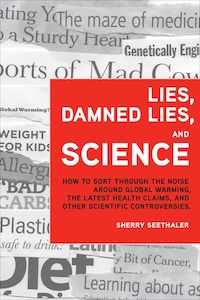

Critique
psychology
Now more than ever, dynamic, unstructured, multidimensional problems, such as health disparities and environmental degradation, are the focus of discussions in the public and private sectors locally, nationally and globally. These are examples of wicked problems, problems that are characterized by their inherent complexity and the need for solution approaches that draw on diverse expertise.
Wicked problems have social relevance but need not be characterized by social discord. The socially unifying but wickedly challenging race to beat cancer involves researchers from nearly every discipline in academia, industry and government, as well as clinicians, patients, families, public health experts, the media, policymakers, funders, and those who will educate the next generation of researchers and leaders. Wicked problems make it clear that communication about science-related issues is not, and cannot be, the purview of a select few.
Unfortunately, high school and even college science tends to be focused on facts, formulae, and experiments that have known outcomes. In the real world, there is much more uncertainty and interpretation. Decisions about contemporary scientific issues often must be made on the basis of incomplete information, and multiple viewpoints are the norm rather than the exception. Science communicators need to convey more than facts. They need to provide tools to help people sort through information and assess tradeoffs.
Lies, Damned Lies, and Science

Lies, Damned Lies, and Science: How to Sort Through the Noise Around Global Warming, the Latest Health Claims, and Other Scientific Controversies unravels the complexity of such issues to help scientists and nonscientists alike identify hogwash and balance tradeoffs to make well-reasoned decisions about science in everyday life.
Chapter 1. Potions, plot, personalities: Understand how science progresses and why scientists sometimes disagree.
Chapter 2. Who's who? Identify those who hold stake in an issue and what their positions are.
Chapter 3. Decisions, decisions: Elucidate all the pros and cons of a decision.
Chapter 4. Compare and contrast: Place alternatives in an appropriate context to evaluate tradeoffs.
Chapter 5. What happens if...? Distinguish between cause and coincidence.
Chapter 6. Specific or general: Recognize how broadly the conclusions from a study may be applied.
Chapter 7. Fun figures: See through the number jumble.
Chapter 8. Society's say: Discern the relationships between science and policy.
Chapter 9. All the tricks in the book: Get past the ploys designed to simply bypass logic.
Chapter 10. Fitting the pieces together: Know how to seek information to gain a balanced perspective.
Lies, Damned Lies and Science is available from the publisher, FT Press, as well as Amazon and other booksellers. In addition to the English edition, it has been published in Korean, Polish and Spanish. See "Teaching Skeptical Inquiry" in CBE-Life Sciences Education (2012, Vol. 11, pp. 233-234) for a feature book review.
Putting Claims in the Crucible.
Information and misinformation bombard us daily. Some purveyors of information are deliberately trying to mislead by presenting incorrect information, or by leaving out key facts. Others are repeating flawed information without knowing it is wrong. Still others are presenting accurate information in a way that is readily misinterpreted. Regardless of the intent behind the inaccuracy, it is up to the information consumer to beware. Yet, there exists more than a fine line between cynicism and skepticism.
Sound decisions are based on all the relevant information known to date, and they are made through careful costs-benefits analyses. Asking good questions is the starting point for gathering relevant information and correcting misinformation. It takes practice to learn to sort through the noise, but when one starts to carefully scrutinize claims, recurring themes emerge that can facilitate the reasoning process. Effective communication helps, not hinders, this reasoning process.